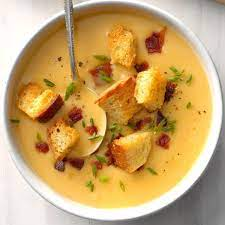

Soup

You came looking for Soup? Well, here it is.
This isn't just soup. It's broth. Bone broth. So, soup (well, stock).
Bone broth is obvs modern and new, but we couldn't afford the PR so we just have traditional stock based soup here.
Ingredients:
- Bones
- Water
- Salt (to taste)
- Passion
- Time
- Traditional Values
Method Steps:
- Get in the car, and make sure that 'gas tank' is full to the brim
- Go driving, keeping your eyes peeled for any signs of roadkill
- Bring roadkill home and debone
- Get a cauldron and fill with water over an open fire. Cackle loudly.
- Add bones (reminder: this isn't bone broth. It's stock)
- Cook for hours on end until you feel the magic has happened. Add veggies. Serve.